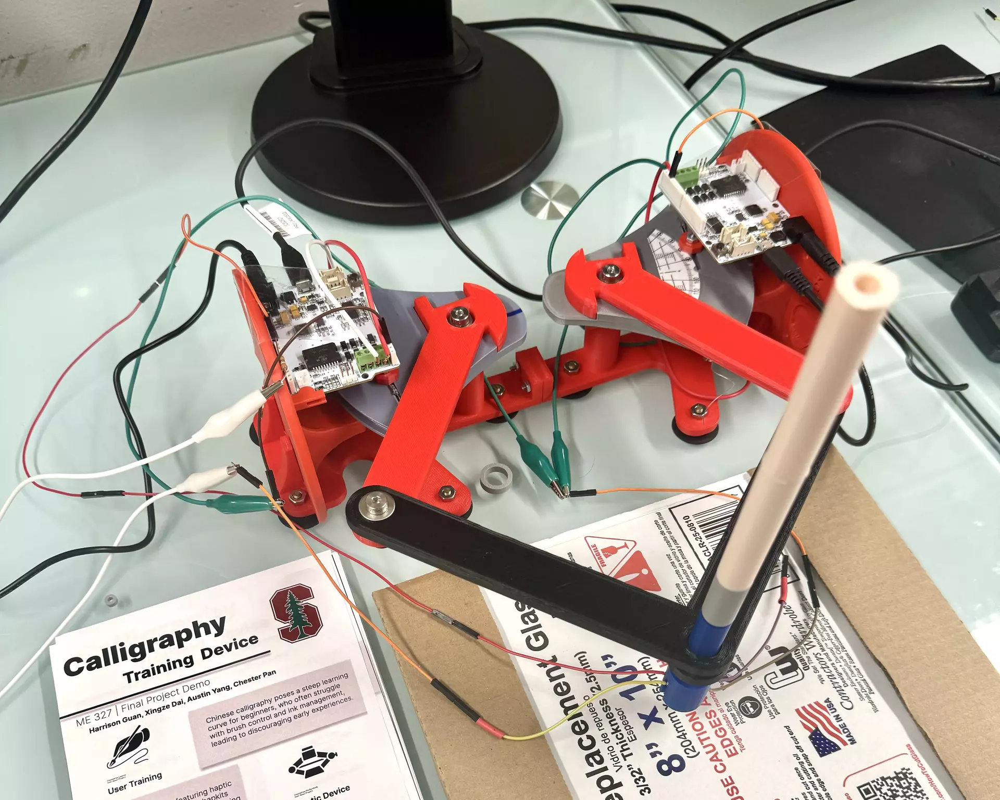
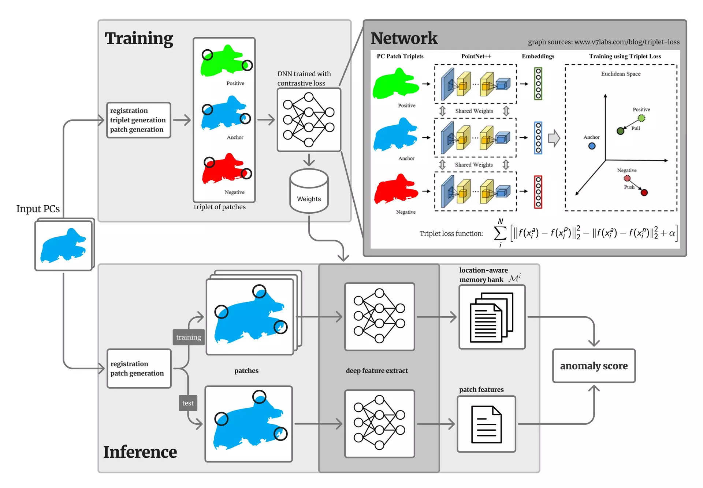

Projects
Project has always been around with my career as an engineer. They showcase my implementation of various skills and tools in engineering problems, spanning from mathematical algorithms, human subject studies, and hardware prototypings.
3D Computer Vision 📷
Robotics / Control 🦾
Decision Making 🔀
Optimization 📈
Machine Learning 💻
Robotics / Control 🦾
Decision Making 🔀
Optimization 📈
Machine Learning 💻
with Amy Lo, Nils Forstall, Ellie Vela
A 3D-games AI Assistant for BLV Players ♿👋
with Harrison Guan, Xingze Dai, Austin Yang

Our team developed an innovative calligraphy training device incorporating haptic feedback technology.
The hardware setup features a pantograph mechanism that allows free movement of the pen across a 2D plane, ensuring realistic simulation of traditional calligraphy strokes. Complementing this, our software utilizes a Python-based pipeline to generate dynamic feedback aligned with digital stroke patterns, enhancing muscle memory and reducing beginner errors.
Calligraphy Training Device 👋🦾
In the accessbility design studio class, we designed "echo" to enhance BLV user's perception in 3D virtual environment, specifically in gaming context.
We used multimodal approach by applying spatial audio and designed kinesthetic feedback joy-sticks, helping BLV users perceive path clearance and turning angles.
Check the slides for detail!
We used multimodal approach by applying spatial audio and designed kinesthetic feedback joy-sticks, helping BLV users perceive path clearance and turning angles.
Check the slides for detail!

We propose a novel method for anomaly detection, based on a combination of unsupervised learning and spatially aware patch comparison.
We use contrastive learning to train a neural net-based feature extractor that learns rich representations (features) of patches. We employ an algorithm that effectively detects anomalies by comparing representations of these patches in a spatial-aware manner.
We use contrastive learning to train a neural net-based feature extractor that learns rich representations (features) of patches. We employ an algorithm that effectively detects anomalies by comparing representations of these patches in a spatial-aware manner.
Defect Detection via 3D Point Clouds 📷
with Alexander Tarvo, Kasjan Siwek